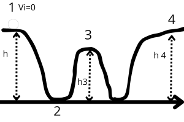

L'energia meccanica, indicata con la lettera E, rappresenta la somma tra l'energia cinetica (K) e l'energia potenziale (U).
Formula:
📌 E = K + U
Quando agiscono solo forze conservative, vale un principio fondamentale: l'energia meccanica si mantiene costante, cioè si conserva.
In pratica, anche se l'energia cambia forma (da potenziale a cinetica e viceversa), la quantità totale non cambia mai.
Ma perché abbiamo bisogno di definire questa energia meccanica? Perché ci permette di descrivere meglio come si comportano i sistemi fisici, soprattutto quando non ci sono forze esterne a interferire.
Per esempio, quando una forza agisce su un oggetto, compie un lavoro, che si traduce in una variazione di energia cinetica (secondo il teorema dell'energia cinetica):
📌 L = ΔK
Se però la forza è conservativa, possiamo legare il lavoro anche all'energia potenziale:
📌 L = –ΔU
Uguagliando le due espressioni (valido solo per forze conservative), otteniamo:
📌 ΔK = –ΔU
Sviluppando le variazioni, si arriva a:
📌 K2 – K1 = –(U2 – U1)
Che diventa:
📌 K1 + U1 = K2 + U2
Questo ci mostra che la somma tra energia cinetica e potenziale iniziale è uguale alla finale. Ed è proprio da qui che nasce il concetto di energia meccanica!
In breve:
📌 E1 = E2
cioè: l’energia meccanica non cambia.
Questo è il principio di conservazione dell'energia meccanica, valido solo se:
Le montagne russe sono un classico esempio di come l'energia potenziale e quella cinetica si trasformano continuamente, ma la somma (l'energia meccanica) resta la stessa. Quando il carrello sale, guadagna energia potenziale. Quando scende, l'energia potenziale si trasforma in energia cinetica, permettendo al carrello di accelerare.
Supponiamo di lanciare una palla verso l'alto. Inizialmente, la palla ha solo energia cinetica. Man mano che sale, l'energia cinetica diminuisce mentre l'energia potenziale aumenta. Quando la palla raggiunge la massima altezza, l'energia cinetica è zero e tutta l'energia è potenziale. Poi, la palla inizia a scendere e l'energia potenziale si trasforma di nuovo in energia cinetica.
Calcolo: Se una palla di massa m = 0.5 kg viene lanciata da un'altezza h = 10 m, l'energia potenziale iniziale è:
U = mgh = 0.5 * 9.8 * 10 = 49 J (Joule).
All'inizio, tutta l'energia è potenziale, quindi E = 49 J. Al massimo punto, quando l'energia cinetica è zero, l'energia meccanica è ancora 49 J.
Immagina una palla che scivola su una rampa senza attrito. Quando la palla scende, la sua energia potenziale si trasforma in energia cinetica.
Calcolo: Se una palla di massa m = 1 kg scivola su una rampa da un'altezza h = 5 m, l'energia potenziale iniziale è:
U = mgh = 1 * 9.8 * 5 = 49 J.
Quando arriva al fondo della rampa, tutta l'energia potenziale si è trasformata in energia cinetica, quindi l'energia cinetica finale è 49 J.
Le montagne russe sono un classico esempio di conservazione dell'energia meccanica. Quando il carrello sale, guadagna energia potenziale. Quando scende, l'energia potenziale si trasforma in energia cinetica, permettendo al carrello di accelerare.
Calcolo: Se un carrello di massa m = 500 kg parte da un'altezza h = 50 m, l'energia potenziale iniziale è:
U = mgh